ILLUMINATI
Os Illuminati (“iluminados”, em latim) são uma sociedade secreta que atua discretamente em todo o planeta. Eles controlam não só os governos do mundo como praticamente todos os meios de comunicação, para poderem nos manter sob controle seja em forma de mensagens subliminares e até mesmo claramente, sem disfarces. Um filme que mostra quase que explicitamente sobre os Illuminati é o filme Tomb Raider:
| 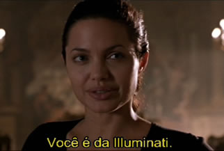 | 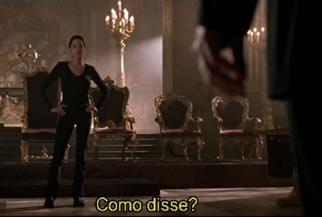 |
| 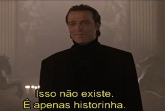 | 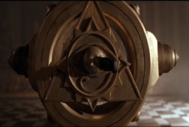 |
| 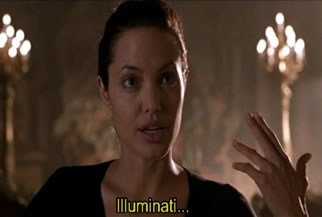 | 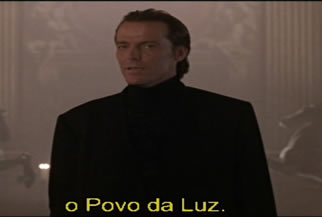 |
O planos dos Illuminati
O principal plano dos Illuminati é instaurar uma única moeda, governo e religião em todo o planeta Terra (que eles chamam de Nova Ordem Mundial), para assim ter o total controle sobre todas as pessoas (ou seja, ditadura e escravidão).
Antes disso o plano é matar mais de 80% da população mundial e disseminar o anticristo pelo planeta.
| 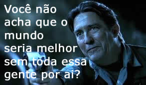 | Cena do flime Lara Croft Tomb Raider, A Origem da Vida. |
O anticristo não é uma única pessoa, é tudo aquilo que vai contra os princípios das leis de Deus como o ódio, a raiva, a inveja, matar e etc. O anticristo é a religião baseada em negar a Deus. Eles querem manter você afastado de Deus.
Link: 50 coisas terríveis sobre os illuminati.
Membros Illuminati e sinais de reconhecimento
Há membros Illuminati em todo o planeta, conhecidos pela mídia ou não eles ocupam cargos importantes nas organizações do planeta. Eles trabalham diariamente para que o plano de estabelecer a Nova Ordem Mundial seja cumprido.
Os illuminati mantêm sinais para se reconhecerem entre si. Os sinais seriam uma forma de olhar diretamente nos olhos da outra pessoa e um sinal específico com a mão chifrada que representa adoração ao Diabo. Fora estes dois, haveriam outros sinais que são ensinados aos seus membros.
Muitas pessoas notáveis foram ou são membros dos Illuminati, como Winston Churchill, a família Bush, Barack Obama, a família Rothschild, a família Rockefeller, Zbigniew Brzezinski, os presidentes e ex-presidentes dos maiores países do mundo como o Brasil e até os papas Bento XVI e João Paulo II.
Rituais secretos satânicos
Os ex-membros dos illuminati dizem que eles fazem reuniões secretas, onde somente membros altamente autorizados podem participar. Nestas reuniões seriam feitos rituais satânicos com o intuito de invocar demônios e o próprio diabo, através do qual eles teriam o conhecimento de acontecimentos futuros.
Símbolos
O principal símbolo dos illuminati é a pirâmide com o olho-que-tudo-vê (olho de lúcifer). Outros são o triângulo, a estrela de cinco pontas (pentagrama), a coruja, um crucifixo virado de cabeça para baixo e a cabeça de um bode.
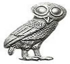O símbolo oficial dos illuminati é a Coruja de Minerva – deusa romana da sebedoria. A coruja, caracterizada por hábitos diferentes das outras aves, é ave de rapina por excelência, e, além de observadora, é misteriosa, esperta e muito curiosa, já que possui uma visão muito rara e apurada (unidirecional: ele gira quase que completamente a cabeça, sendo possível observar praticamente todos os lados), algo muito superior às demais classes de animais. Seu olhar penetra nas trevas como a inteligência penetra na obscuridade das coisas.
| 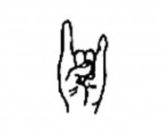 | Mão chifrada Usado por artistas ligados à música (principalmente Rock) e seus fãs. Simboliza o louvor em rituais satânicos. |
| 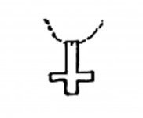 | Cruz virada para baixo Usado por grupos de Rock e adeptos da Nova Era. Simboliza zombaria da cruz de Jesus. É usado também em rituais satânicos. |
| 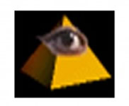 | Olho de Lúcifer Simboliza o olhar de satanás sobre as finanças do mundo. (ver nota de um dólar). |
| 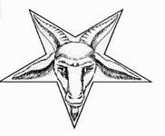 | Cabeça de Bode A cabeça de um bode como zombaria ao cordeiro de Deus “Jesus”. |
O Significado do 911 (11 de Setembro)
Sabe por que as torre gêmeas foram derrubadas justamente no dia 11 de setembro?????
Nos EUA o mês lê-se primeiro, o que pra nós era isso 11/9, pra eles é isso 9/11 >>> 911.
Vou explicar melhor, NA NUMEROLOGIA ILLUMINATI, o número 10 é o Alfa e o Ômega (1 e 0) ou seja, Deus.
O 11 é um passo além de Deus, 101 é um passo além de Deus.
Já o 911 ou 9/11, é negar a Deus. Um Desafio derradeiro, ele vai do número 9 que tem um significado específico, direto para o 11, sem passar pelo 10 (que seria Deus). Isso é negar a Deus na numerologia illuminati!
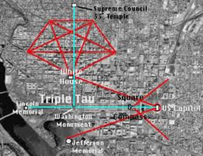Washington nos EUA
Observe o pentagrama na imagem da disposição das ruas de Washington em que a parte sul do pentagrama cai na casa branca. Ou seja, onde Satanás deve residir!!! [faz sentido]
A imagem ao lado também sugere o símbolo da maçonaria, o esquadro e o compasso intercruzados.
Para saber mais veja pelo YouTube: Wake Up Call - Documentário sobre a Nova Ordem Mundial.
*Observação: O YouTube removeu o documentário e todos os vídeos referentes ao assunto da plataforma. Eles não querem que ninguém veja. Será proposital para nos manter na ignorância? Ou porque eles consideram teorias da conspiração pura mentira? Fica a pergunta. Mas provavelmnete são as duas coisas.